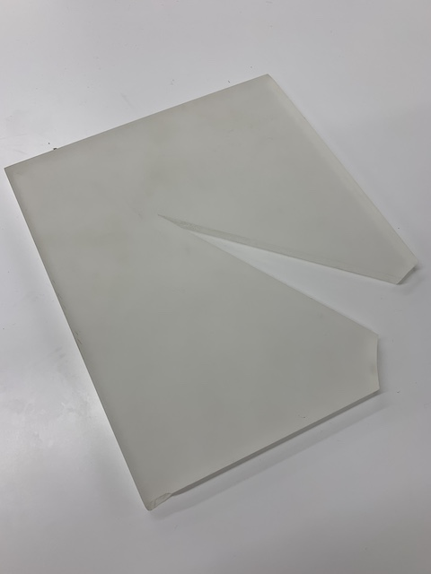
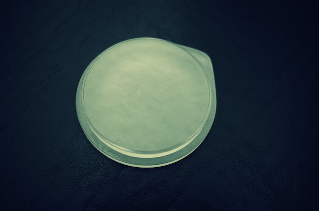
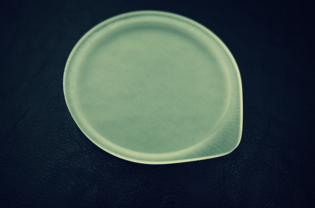
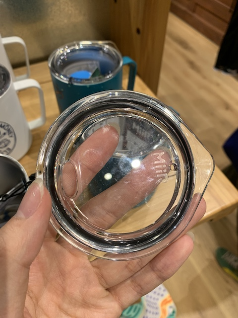

商品概要
アクリルの板を削り出して作ったパッキンが無くても閉まるタンブラーキャップ
作業進捗
タンブラーの蓋を作ろう、欲しい。
6/7 アクリルで作ろう。
元々はレーザーカッターで加工した5mmのアクリルを二枚重ねて作ろうと思っていた。相談したところ10mmのアクリルを使って切削してはどうかと助言をいただいたので変更。
運よく10mmの板をいただけたので、それで切削することに。

6/18 データ完成、プロトタイプ切削
プロトタイプ一号の段階ではパッキンを使う前提で考えていたが、
ウルトラの切削機では溝を掘ることができないので溝のないデータに作り変えて切削した。
上の動画はデータ変更前のもの。


切削時の動画、粗削りに1時間、仕上げ削りに2時間半程度だった。
ちなみにデザインはMiiRの蓋を参考にしている。
MiiRの蓋には飲み口がついているが、持ち運びの際に飲み口から液体が溢れて欲しくなかったのであえて飲み口のないデザインにした。

切削後、早速タンブラーと合わせてみたのだが、予想以上にタンブラーと蓋との隙間が大きかったのでデータを修正すると同時に、
パッキンを使わずに蓋として機能させられるように寸法を調整した。
これを早く切削機でガリガリしたいと思っていたが、このデータが出来上がったのがついこの間なので間に合わないorz.......。
前回のデータから寸法を変更し、エッジの落とし方を面取りにし、テーパーをつけてタンブラーと蓋がよりフィットしやすいようにした。